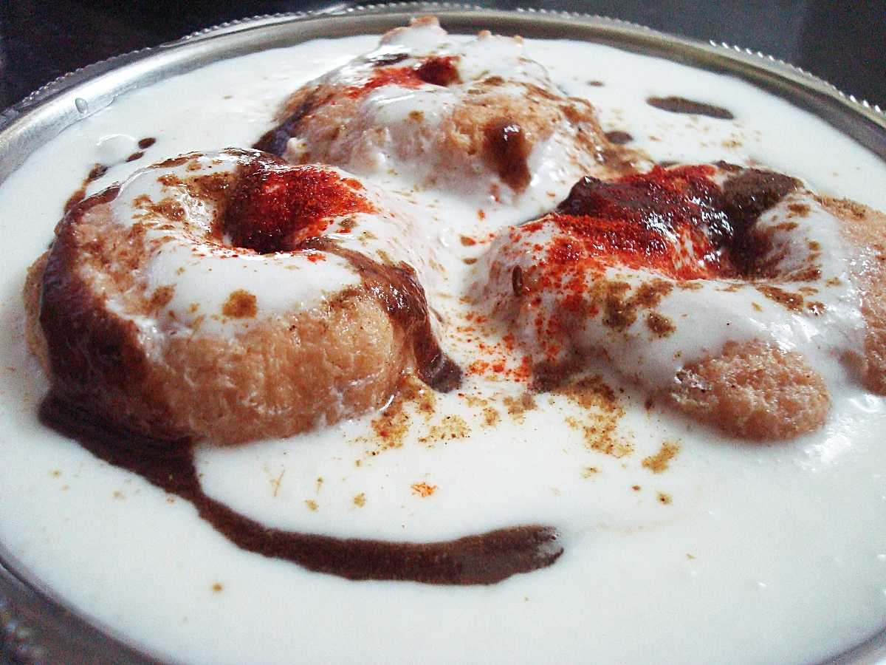

Chena Dahi Vada
Chena Dahi Vada is a sumptuous variation to the regular bhallas prepared using lentil. Similar to Rasmalai in appearance, Chena Dahi Vada is usually served with sweet yoghurt sprinkled with a dash of Masala made of jeera and black salt. These dahi vadas are served with a steaming cup of tea and are quite popular as a breakfast item in Varanasi. The snack offers a perfect mix of sweet and sour flavours. Vishwanath Misthan Bhandar for Chena Dahi Vada A curd dish for all the curd lovers out there. This dish is made up of sweet yogurt, a pinch of jeera masala and black salt. It is then sprinkled with fresh coriander. This dish is a must-try if you want to have a mix of something sweet and sour. The famous place to eat this is in Vishwanath Misthan Bhandar. Deena Chat Bhandar is also famous shop for Chena Dahi Vada.
